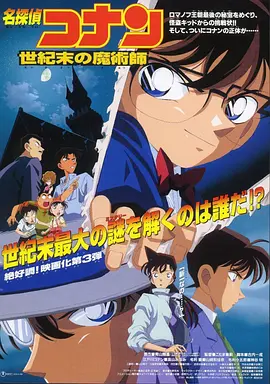
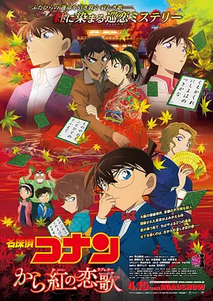

名侦探柯南剧场版
（点击图片即可观看)

名侦探柯南:引爆摩天楼
类型：动画,悬疑,冒险 / 地区：日本 / 年份：1997
导演：儿玉兼嗣
简介：柯南用新一的身份在电话不自愿地约会了小兰，陪她看5月3日的午夜场电影，以便请求小兰替他参加森谷帝二教授举办的茶会。柯南为此十分烦恼，不知如何掩饰他变小的事实。柯南目送小兰离开后，为此烦恼的柯南接到一个电话，是来历不明的炸弹客挑战柯南！少年侦探团收到的引爆遥控飞机、被安装了炸弹的装小猫的篮子，还有环状线的的炸弹陷阱，大家奋力推理，才及时预防了可能发生的意外。可是，最后发现被安装了炸弹的其实是工藤新一和小兰的约会地点-米花町大楼！柯南该怎么办呢?

名侦探柯南:第十四个目标
类型：动画,悬疑 / 地区：日本 / 年份：1998
导演：儿玉兼嗣
简介：目暮警官、小兰的母亲妃英里、阿笠博士接连遭到不明身份之人的暗算。柯南追踪伤害阿笠博士的凶手，他根据几起案件现场留下的线索发现凶手按照扑克牌的顺序行凶，而且遇害者皆与毛利小五郎有关。目暮提供的线索初步揭开事情的真相，原来毛利当年任职警察的时候曾经逮捕犯下杀人罪的赌徒村上丈，当年也更因这一事件导致毛利离职以及婚姻变故。十年后，服刑期满的村上丈出狱，开始按照扑克牌的顺序向毛利身边之人展开报复。在得知原委后，毛利努力寻找身边与数字有关的人。在这一过程中，各种惊险场面接连出现。而柯南也对案件的真相产生疑惑……

名侦探柯南:世纪末的魔术师
类型：喜剧,动画,悬疑,犯罪,冒险 / 地区：日本 /年份：1999
导演：儿玉兼嗣
简介：小兰的朋友原子家铃木财团准备展出他们家珍藏的沙皇尼古拉二世家的宝物——回忆之卵，回忆之卵里收藏了沙皇尼古拉二世一家的珍贵照片，由此特别珍贵。岂料在展出之前，却收到了怪盗基德的通知函，上面用迷语的方式列明他盗宝的时间。原子找到小兰的爸爸名侦探毛利小五郎帮忙，当然，真正的幕后高手柯南也会和小兰一起前来。柯南遇到了同为侦探的服部平次，两人决定一起联手解开怪盗基德之谜！

名侦探柯南:瞳孔中的暗杀者
类型：剧情,动画,悬疑,犯罪,冒险 / 地区：日本 / 年份：2000
导演：儿玉兼嗣
简介：柯南在街头目睹一名正打电话的警察在雨中被射杀，忙将凶手追踪，但凶手逃脱。死者闭眼一刻紧抓左胸，似乎有所暗示。事后柯南从目暮警官口中了解到紧抓左胸是暗示那里有警察手册。不久又有警察手拿警察手册被人射杀于地下车库。对于这两起案件，目暮警官等人一反常态不愿向毛利小五郎及柯南透露太多信息。毛利不甘心进一步追问，白鸟警官只答一句“Need not to know”。该话是警察之间所用的密语，意味这两起杀人事件与警察内部人士有关。柯南、小兰等人参加白鸟妹妹的婚宴，电突然间停掉，那刻小兰正与女警佐藤在洗手间。小兰拿起身边的手电筒欲照明时，一颗子弹射进佐藤身体，小兰吓昏过去。次日小兰醒来，却因怪责自己害佐藤挨枪失去记忆。目暮见事态越来越严重，将秘密说出，原来死去的两名警察正与佐藤一起重查一桩有关医生仁野自杀的案件，该案涉及到警察局长的公子。将局长公子假定为嫌疑人之一时，柯南亦想到佐藤被射杀后宴会上少掉的两个人。

名侦探柯南:通向天国的倒计时
类型：动作,动画,悬疑,惊悚 / 地区：日本 / 年份：2001
导演：儿玉兼嗣
简介：故事围绕西多摩市新建成的日本第一双塔摩天楼展开。柯南与少年侦探团受邀参观时，大楼主办方董事长突然遭杀害。与此同时，黑衣组织成员琴酒和伏特加出现在大楼附近，其目标似乎是收集软件工程师原佳明电脑中的资料，而原佳明不久后亦被灭口。调查中，灰原哀因感受到组织的强烈气息而陷入恐惧。连环杀人案的线索均与《七子之歌》及数字谜题相关，而所有事件似乎都指向即将开幕的双塔摩天楼。在开幕典礼当晚，当宾客齐聚顶层宴会厅时，黑衣组织为消灭所有证据，竟引爆了连接两栋大楼的走廊，并将炸弹安置于楼内。众人被困于即将倒塌的B塔顶楼，唯一的逃生希望是借助园子的跑车，飞跃至因爆炸而倾倒的A塔天台。影片完美融合了本格推理与极限动作场面。在惊心动魄的爆炸、飞跃与倒计时中，柯南不仅需要破解连环杀人之谜，更要与时间赛跑，在摩天楼崩塌前带领所有人逃出生天，同时应对黑衣组织的暗中威胁。紧张感层层递进，最终的高空飞跃场景已成为系列永恒的经典。

名侦探柯南:贝克街的亡灵
类型：动画,悬疑,冒险 / 地区：日本 / 年份：2002
导演：儿玉兼嗣
简介：故事核心围绕一台能重现百年前伦敦的虚拟现实游戏“茧”展开。柯南与众多政商名流的子女成为首批体验者，却意外被失控的人工智能“诺亚方舟”囚禁。游戏规则残酷：所有人将进入19世纪末的伦敦贝克街，若无法在游戏中侦破连环杀人案“开膛手杰克”之谜，所有玩家的脑部都将被破坏。于是，柯南与伙伴们化身福尔摩斯时代的少年侦探，在迷雾笼罩的伦敦街头追寻真相。影片以精妙的双线叙事，将维多利亚时代的悬疑与当代日本的社会批判紧密交织，不仅呈现了紧张刺激的推理冒险，更深层地探讨了世袭制度、教育压力与人工智能伦理等深刻主题，其超前的预见性与人文关怀使其成为一部超越时代的动画经典。

名侦探柯南：迷宫的十字路口
类型：动画,悬疑,冒险 / 地区：日本 / 年份：2003
导演：儿玉兼嗣
简介：东京、大阪、京都相继发生杀人事件，5名死者皆是被头戴面具的黑影人用武士刀和弓箭瞬间杀害。警方介入调查，发现死者都是出没于3地专门偷窃有名的佛像及美术品的偷盗集团“源氏萤”成员。该集团共有成员8名，以义经的家臣名字互相称呼，且都持有一本《义经记》，被害5人手中的《义经记》均被拿走。这日京都古寺山能寺收到奇怪书信，说若能解开信中所附的画谜，便能找到8年前被窃的如来佛像。柯南、小兰随毛利小五郎来到该寺，均对画谜一筹莫展。5名被杀者之一曾对与新一不相上下的大阪高中生服部平次照料有加，服部也来到京都对案件秘密展开调查，并借机找寻自己的初恋情人。柯南与服部相遇联手调查时，发现有人想置服部于死地，紧接“源氏萤”另一成员被害，而这一切，似乎又都与画谜有关。

名侦探柯南：银翼的魔术师
类型：动画,悬疑 / 地区：日本 / 年份：2004
导演：山本泰一郎
简介：知名舞台剧女演员牧树里这日收到怪盗基德的预告信：在26个字母的盘旋飞舞中，他来拜领无价的“命运的宝石”。毛利小五郎受到牧树里委托将信件分析，认为基德将在演出最后一晚前来盗取宝石，当晚他及柯南、小兰等人来到剧场，那里早有诸多警察守候。令柯南吃惊的是，基德竟扮成工藤新一出现在众人面前，但他及众人方向不同的紧张过后，宝石并没被盗，柯南醒悟字母预告信与航班相关。而柯南、小兰、牧树里及其同事搭乘的前往北海道的飞机上，尚有一起杀人计划正被精心设计。

名侦探柯南：水平线上的阴谋
类型：动画,悬疑 / 地区：日本 / 年份：2005
导演：山本泰一郎
简介：日本著名造船公司八代商船设计制造了旗下第一艘豪华邮轮爱芙罗黛谛号，为庆祝该邮轮的处女航，八代商船邀请各界名流参加，上到首相下到富豪悉数前来。铃木园子的父母也接到邀请，因行程安排铃木夫妇无法出席，园子于是邀请、毛利小五郎、小兰、柯南等一众好友同行。蓝天白云，美酒佳肴，众人无不陶醉于这美好的假期之中。但是，这注定是一次不寻常的航行。先是园子突然遭人绑架，接着八代商船的女社长贵江被人杀害，与此同时董事长八代延太郎也从船上神秘失踪。此前不久，贵江的丈夫八代英人驾车时突发心脏病冲下山崖。这一连串死亡、失踪案件似乎都与15年前八代商船的沉船事故有关。在层层推理调查之下，隐藏的秘密渐渐浮出水面……

名侦探柯南：侦探们的镇魂歌
类型：动画,悬疑 / 地区：日本 / 年份：2006
导演：山本泰一郎
简介：一天毛利小五郎收到一张请帖，里面是谜样男子的委托，需要前往横滨的一个游乐场。小五郎和柯南一行人快乐地到达欢乐的游乐场，还带上了可以出入无阻代表VIP的手表，不料正中那名神秘男子的圈套。所有带上手表的人不得离开游乐场，否则便会发生爆炸。从现在开始到晚上十点，柯南和小五郎如果不能解开谜题，兰和少年侦探团也会随着游乐园粉身碎骨。然而更意想不到的是，那名男子居然直接称呼柯南为工藤新一。

名侦探柯南：绀碧之棺
类型：剧情,动画,悬疑 / 地区：日本 / 年份：2007
导演：山本泰一郎
简介：柯南和小五郎等拉着大队，来到位于太平洋中的美丽小岛“神海岛”渡假。这座岛屿自古已有流传，大概有关沉没于海底的古代遗迹“海底宫殿”，及300年前两名女海盗遗留下来的宝藏传说。小兰和园子不惧流传，在“海底宫殿”附近潜水时，意外遇到一大群正在寻找宝物的猎人，不料其中一人突然遭鲨鱼攻击，不幸身亡！小兰和园子幸运逃难，柯南见那位猎人死状诡异，与灰原一起展开调查。柯南认为猎人之死，跟宝藏传说有着莫大关系，他试图解开背后原因，“海底宫殿”的谜题一直系绕在他的脑海中。他找到了一组神秘名词“Jolly Roger(海盗旗)”后，满以为有所起色，猎人却突然现身，并偷走了原来发现的宝藏！小兰和园子落在猎人的魔掌之中，性命危在旦夕！隐藏于传说中的讯息是什么？“海底宫殿”有什么秘密？穿越300年时光的暗号，柯南誓要逐步解开迷题

名侦探柯南：战栗的乐谱
类型：动画,悬疑 / 地区：日本 / 年份：2008
导演：山本泰一郎
简介：堂本一辉是著名的钢琴演奏家，两年前突然宣布不再演奏钢琴转而攻向管风琴，更斥资建造了堂本音乐厅，准备在落成之日举行演奏会。然而在演奏会之前，堂本音乐学院的学生相继死去，先是爆炸案，后是单个被杀。园子带着柯南一行人来听排练，认识了女高音歌唱家秋庭怜子，拥有绝对音感的秋庭也开始遭遇到危险：润生茶被下药、作森林浴时遭遇空气枪袭击、试演会当天更遭击晕。然而就是从这些事件中，柯南找到了推理的逻辑：凶手试图把秋庭排除在凶杀外。这边已经正式开演的演奏会浑然不知音乐大厅外已是爆炸连天，小兰、灰原哀以及演奏厅内的一千多人顿时危在旦夕，绝对音感成为了唯一的救命线索。柯南找到了爆炸的逻辑，要在罪犯引爆最后一个炸弹前，把他找出来。

名侦探柯南：漆黑的追踪者
类型：动画,悬疑 / 地区：日本 / 年份：2009
导演：山本泰一郎
简介：一年一度的七夕即将到来，东京、神奈、静冈、长野等地却接连发生六起连环杀人案，被害者身边皆留下麻将牌中的七筒和奇怪暗示。由于作案范围过大，各地警署探员纷纷聚到东京警署的专案组共同研究案情，毛利小五郎也被邀请参加，柯南则偷偷听取了会议的内容。会后，柯南无意中听到群马县警部山村操哼唱的童谣，继而发现有黑衣组织的成员混进警察中间。在一次围捕行动中，柯南遇到假扮人质的Vermouth，得知近期一连串的杀人案件与存有组织内部人员资料的记忆卡有关。与此同时，潜入警察内部的间谍偷偷盗取工藤新一和柯南的指纹，新一的身份眼看被拆穿，巨大的危险正向他和身边的人急速袭来……

名侦探柯南：天空的遇难船
类型：动作,动画,悬疑 / 地区：日本 / 年份：2010
导演：山本泰一郎
简介：铃木园子的叔叔次郎吉不甘心失败，决定再次向怪盗基德发出挑战。这位坏脾气的大叔斥巨资制造了巨型的飞船贝尔·雪利二世号，并以镶嵌有名贵宝石“天空的贵妇人”的戒指作赌注，邀请基德前来挑战，看他能否在东京到大阪的这6小时时间内完成这项困难的任务。柯南、小兰等人理所当然也接到邀请，甚至电视台的人也兴师动众前来。随着时间的流逝，双方的对决悄悄展开。另一方面，恐怖组织红色暹罗猫也登上了飞船。此前不久，红色暹罗猫袭击了国立东京微生物研究所，并盗走一种致命的病毒。本片根据青山刚昌的同名漫画改编，是该动画的第14部剧场版。

名侦探柯南：沉默的十五分钟
类型：动画,悬疑 / 地区：日本 / 年份：2011
导演：山本泰一郎
简介：位于东京的东都线地铁开通当日，一起针对东京都知事朝仓优一郎的炸弹袭击事件爆发，导致东都线列车损毁。经过一番推理，柯南（高山みなみ 配音）等人认定这与8年前朝仓主持负责的北之泽水坝的修建有关。当年为了修建大坝，朝仓动员北之泽村的人民搬入新村，可是仍有许多人反抗到最后阶段。为了探明真相，柯南、灰原（林原めぐみ 配音）、少年侦探团以及毛利小五郎（小山力也 配音）等人开赴白雪皑皑的北之泽。在这片纯净的雪国，少年们尽情玩耍，与此同时他们也遇到了几名原北之泽村的村民，山尾溪介、远野瑞希、立原冬美等人。他们是从小一起长大的好朋友，而彼此之间似乎又有着某种芥蒂和秘密。真相究竟如何…… 本片为《名侦探柯南》第15部剧场版。

名侦探柯南：第十一名前锋
类型：动作,动画 / 地区：日本 / 年份：2012
导演：山本泰一郎 静野孔文
简介：阳光明媚的一天，东都体育场正进行一场东京Spirit和大阪钢巴的精彩足球比赛，江户川柯南（高山南配音）、灰原哀（林原惠美配音）、阿笠博士以及少年侦探团的伙伴们齐齐到场呐喊助威。城市的另一边，事务所内的毛利小五郎（小山力也配音）却接到一通恐怖袭击的电话。经过一番努力，小兰（山崎和佳奈配音）终于摆脱新一解开了犯人留下的暗语，成功拯救了无数人的生命。在此之后，警方和毛利一方锁定了数名嫌疑人，并随之展开调查。与此同时，躲在暗处的犯人继续策划新一轮的袭击，前所未有的大挑战，争分夺秒的对决，裹挟着无数怨恨的袭击强势袭来……本片为日本J联赛创立20周年纪念作品，现役选手三浦知良、远藤保仁、今野泰幸、楢崎正刚、中村宪刚等人为片中本人的形象配音。

名侦探柯南：远海的侦探
类型：动画,悬疑,犯罪,冒险 / 地区：日本 / 年份：2013
导演：山本泰一郎 静野孔文
简介：晴朗时节，江户川柯南（高山南 配音）和毛利小五郎（小山力也 配音）、小兰（山崎和佳奈 配音）以及少年侦探团的伙伴们一同来到京都，他们即将登上自卫队的宙斯盾战舰，体验一把出海作战的感觉，期间还结识了美丽又有着几分神秘的女自卫队员藤井七海（柴咲幸 配音）。谁知快乐的氛围很快被恐慌所替代，战舰上突然发现一条断掉的手臂，消失的自卫队员又引起军方的恐慌与猜测。原来某国神秘间谍X已悄悄登上宙斯盾，伺机盗取战舰上的绝密情报。为了找出隐藏的对手，柯南和灰原哀（林原惠美 配音）、阿笠博士（绪方贤一 配音）、服部平次（堀川亮 配音）以及远山和叶（宫村优子 配音）通力合作，与间谍展开连番斗智斗勇的较量……

名侦探柯南：异次元的狙击手
类型：动画,悬疑,犯罪,推理 / 地区：日本 / 年份：2014
导演：静野孔文
简介：风和日丽的一天，铃木财团巨资营建的铃木塔举行了盛大的开幕典礼。柯南（高山南 配音）和好朋友们自然受邀参观。谁知一名游客突然被远处建筑发射来的子弹狙击身亡，柯南锁定凶手果断展开追击，然而对方胆大非常，公然炸毁拦截他的警车，在重重包围中脱身而去。在此之后，FBI和日本警方组成联合调查总部，经朱蒂•斯泰琳（一城美由希 配音）介绍得知，嫌疑人很可能是原美国海豹突击队狙击手蒂莫西·亨特。战功显赫的亨特曾经获得过银星勋章，但是后来被战友指控违反交战原则，射杀了手无寸铁的平民，此后他更在战场上遭遇影响毕生的创痛，人生也彻底跌入低谷。此番他以神秘狙击手的出现，显然是想想那些毁灭了他的人生的人们复仇。狙击事件接连而起，全东京陷入莫大的恐慌之中……

名侦探柯南：业火的向日葵
类型：动画,悬疑,冒险 / 地区：日本 / 年份：2015
导演：静野孔文
简介：在美国曼哈顿举行的艺术品拍卖会上，一度被认为毁于二战空袭的梵高亲笔临摹向日葵系列2号画作惊艳登场。财大气粗的铃木财团顾问的铃木次郎吉（富田耕生 配音）一骑绝尘，以三亿美元天价将其收入囊中。在之后的记者招待会上，铃木宣布将联系分散在世界各地收藏家手中的向日葵画作集结在日本，举行一次梦幻展览。为此，他聘请毛利小五郎（小山力也 配音）、展览企划负责人圭子•安德森（榊原良子 配音）、画作鉴定师宫台夏美（荣仓奈奈 配音）等七位专家组成“七武士”团队为展览保驾护航。谁知怪盗基德（山口胜平 配音）从一开始便锁定该画作，他不仅大闹会场，还为了抢夺画作而险些炸毁运送专机。随着画展日期的临近，柯南（高山南 配音）与伙伴们必须尽快越过一座座难以想象的险峰……

名侦探柯南：纯黑的恶梦
类型：动画,悬疑 / 地区：日本 / 年份：2016
导演：静野孔文
简介：漆黑的夜晚，一名间谍悄然潜入日本警方某机构，盗走了记载着各国谍报机构重要数据的绝密文件的绝密数据。日本警方和FBI探员赤井秀一（池田秀一 配音）旋即与间谍展开追逐。最后，逃亡者的车辆坠落悬崖。第二天，柯南（高山南 配音）和伙伴们来到东都水族馆观光，结果发现一名受伤的美丽女子（天海佑希 配音）。该女子处于失忆状态，身上的手机也破损无法使用。柯南等人答应要帮她恢复记忆，当他们七嘴八舌之际，藏在暗处的黑衣组织成员贝尔摩德（小山茉美 配音）冷冷地注视着这一切。在相处过程中，女子非凡的身手和奇怪的言行举止让灰原哀（林原惠美 配音）对其真实身份产生怀疑。刚刚还一派祥和的水族馆，沉浸在快乐之中的人们，根本会想到随着那名神秘女子技艺的恢复，自己马上就要被卷入黑暗组织的杀戮和混乱之中……

名侦探柯南：唐红的恋歌
类型：动画,悬疑,推理 / 地区：日本 / 年份：2017
导演：静野孔文
简介：阳光明媚的一天，柯南（高山南 配音）、小兰（山崎和佳奈 配音）以及少年侦探团的伙伴们随同毛利小五郎（小山力也 配音）来到大阪，参加在当地举行的“高中生皋月杯”百人一首和歌大赛。期间，他们还见到了彼此的好友服部平次（堀川亮 配音）和远山和叶（宫村优子 配音）。就在比赛进行中途，一封爆炸预告信送到电视台，警方迅速行动起来组织疏散。疏散一半时，爆炸突然发生，结果平次与和叶被困在建筑物中。而在一连串的混乱过后，一位皋月杯相关人员的尸体突然出现在众人面前。迷离的案情再度引起柯南的注意……本片根据青山刚昌的超人气漫画改编，系“名侦探柯南系列”第21部电影版

名侦探柯南：零的执行人
类型：动画,悬疑 / 地区：日本 / 年份：2018
导演：立川让
简介：东京峰会召开在即，为了确保会议顺利进行，日本警方出动约两万名警力对位于东京湾的超大设施“海洋边缘”进行安保工作。可就在严密的防控下，此地已然发生了爆炸案。令柯南（高山南 配音）等人始料未及的是，现场居然留下了对毛利小五郎（小山力也 配音）极其不利的证据。在此之后，小五郎 遭到逮捕。柯南则发现安室透曾出现在爆炸现场，并且负了伤。为了还毛利叔叔的清白，柯南和阿笠博士以及少年侦探团的小伙伴们联合起来勘察现场，搜集证据。随着调查的深入，柯南发现这起爆炸案隐藏着包括恐怖分子、公安在内多方的复杂关系，而真相更令所有人瞠目结舌…… 本片是“名侦探柯南系列”第22部动画剧场版，票房总收入超过90亿日元。

名侦探柯南：绀青之拳
类型：动画,悬疑,推理,犯罪, / 地区：日本 / 年份：2019
导演：永冈智佳
简介：南洋富庶之国新加坡，著名的鱼尾狮突然喷涌鲜血，预示着新的阴谋和危机的到来。与此同时，京极真（桧山修之 配音）即将参加在新加坡举办的空手道锦标赛。为了给男友助威，土豪之女铃木园子（松井菜樱子 配音）邀请小兰（山崎和佳奈 配音）及其他的朋友们一同飞往新加坡。只不过由于新一正以小学生的身份存在，所以他没有护照。当一阵昏迷之后，柯南（高山南 配音）苏醒过来，惊讶地发现自己已经身处新加坡。而就在不远处，正在和小兰快乐交谈的居然是工藤新一。原来这一切都是怪盗基德（山口胜平 配音）搞的鬼，不久前鱼尾狮喷血事件，直接将罪名栽在基德身上。而这一切凶险事件，都与空手道锦标赛的奖品——宝石“绀青之拳”息息相关……

名侦探柯南：绯色的子弹
类型：动作,动画,悬疑,冒险,推理,犯罪, / 地区：日本 / 年份：2021
导演：永冈智佳
简介：每四年一届的体育界最大盛事——世界体育大会（世体会，WSG）即将在日本东京举行，届时时速达到惊人的1000公里的真空超导磁悬浮列车也将与世人见面。在世体会赞助商壮行会上，主办方宣布除了赞助方和嘉宾外，还将通过抽签的方式选出该列车首批荣幸之至的乘客。得到消息后，少年侦探团的各位跃跃欲试，殊不知意想不到的是突然发生。在壮行会上，许多高层领导接连遭到绑架。危急关头，柯南与赤井秀一先后投入了与幕后真凶争分夺秒的抗争之中……

名侦探柯南：万圣节的新娘
类型：动作,动画,悬疑, / 地区：日本 / 年份：2022
导演：满仲劝
简介：正值万圣节之际，东京涉谷热闹非凡。涉谷HIKARIE大厦里正在举办一场婚礼，身着婚纱的便是——警视厅的佐藤警官。当柯南等宾客都在见证这场婚礼的时候，突如其来的暴徒向佐藤扑去！高木为了保护佐藤而受伤，好在性命无忧。可这时映入佐藤眼里的，是三年前爆炸事件松田阵平殉职时出现的死神的幻影，这一次出现在了高木的身上。与此同时，那场连续爆炸事件的犯人越狱了！这是巧合吗？这个犯人同时也是公安警察降谷零(安室透)宿命的敌人，因为他害死了自己的同学松田。在即将追到犯人之际，突然出现了一个神秘的变装人物，给安室装上了项圈炸弹。为了解除项圈炸弹，柯南赶到了安室潜伏的地下避难所。柯南从安室口中得知了另一桩事件——三年前，安室和警校同学(现已亡)在涉谷遇到了身份不明的变装炸弹犯「普拉米亚」。然而这时，危险已经开始笼罩搜查中的柯南等人……

名侦探柯南：黑铁的鱼影
类型：动作,动画,悬疑,惊悚,犯罪,冒险 / 地区：日本 / 年份：2023
导演：立川让
简介：故事发生在东京八丈岛近海，一座将全球各地警方监控相连接的高科技设施——“太平洋浮标”即将启动。为了与欧洲刑警组织管辖的范围联网，来自世界各地的工程师聚集在这里。基于人脸识别的全新“黑科技”也正在测试中……与此同时，柯南一行人前往八丈岛观鲸，途中柯南接到冲矢昴（赤井秀一）的电话，被告知欧洲刑警组织成员在德国遭到琴酒的杀害。为调查真相的柯南潜入“太平洋浮标”。正当工程师们正在为系统启动而展开准备工作时，一桩案件突然发生！一名女工程师被黑暗组织绑架，她手中存有核心技术的U盘也落入了黑暗组织手中！此时，水下传来未知潜水艇逼近的声音，令人毛骨悚然，一个神秘的黑影也正在悄悄接近灰原哀……

名侦探柯南：百万美元的五棱星
类型：动画,悬疑,犯罪,冒险,推理,剧情,热血,动作, / 地区：日本 / 年份：2024
导演：永冈智佳
简介：怪盗基德的预告信出现在了北海道函馆，斧江财阀的收藏库中。这次基德将要盗走的是，江戸幕府时期新选组副长土方岁三的日本刀。向来追逐奢华宝石的怪盗基德，居然会看上刀？此时，被称作西部名侦探的服部平次和柯南一行人，也因为剑道大会来到了函馆，在基德执行预告的当日，平次看穿了基德的伪装并对其穷追不舍！ 同一时间，一具尸体在函馆仓库街被发现，尸体的胸口有一个十字伤口。搜查中，出现了一位被叫做“死之商人”的活跃于亚洲一带的美籍日裔军火商。这个人一直在寻找斧江家初代家主藏在函馆的宝藏。斧江家江戸幕府战争时代深耕军需产业，传说那宝藏是能扭转幕末纷争的强力武器，而这宝藏似乎和基德追逐欲盗取的刀有着千丝万缕的联系。在基德瞄准刀的同时，有一位剑士也在向基德逼近……
名侦探柯南：独眼的残像
类型：剧情,动画,悬疑,犯罪 / 地区：日本 / 年份：2025
导演：永冈智佳
简介：我想起来了……”沉睡的记忆与真相即将觉醒。故事以长野县为舞台，高人气角色“长野三人组”大和敢助、诸伏高明、上原由衣将登场亮相。当毛利小五郎警视厅时期同事“鳄鱼”遭遇意外，与致使大和敢助“独眼”的神秘雪崩案交织，无法兑现的承诺和独眼中的残像就此重叠。雪花飞舞，真相与爱意终将明晰！这一次，毛利小五郎将不再沉睡，与柯南、大和敢助等人携手探案，亲手揭开掩埋于雪山之下的秘密与真相……
以上就是截至2025年的剧场版
共28部